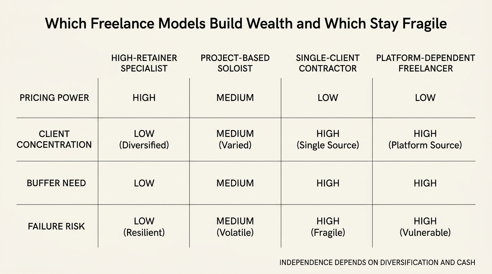

The Freelance Freedom Tradeoff
Freelance work sells itself with one clean promise: more freedom. Fewer meetings, more control, direct ownership of client relationships, and the possibility that effort maps more tightly to income. That promise is real for some workers. It also hides the transfer of several balance-sheet burdens from employer to household. Once that transfer is priced honestly, the freedom claim becomes conditional rather than automatic.
The economic difference is not only that freelance income is variable. It is that the worker now has to recreate the operating system that employment used to supply by default: health coverage, tax withholding discipline, retirement automation, bench-building, unpaid business development, and protection against dry months. Gross billings can rise while investable surplus falls because the household is now underwriting functions that used to sit inside the firm.
Established fact: self-employed workers often lose access to employer-sponsored benefits and must replace those systems through the individual market, self-funded buffers, and self-managed retirement plans. Reasoned inference: freelance work becomes wealth-positive only when pricing power, client diversification, and buffer discipline outweigh the extra volatility and operating overhead.
Freedom Exists, but It Is Not Free
The appeal of freelancing is not imaginary. Control over schedule, project selection, and location can improve quality of life and reduce the friction that salaried work often imposes. Some specialists can also raise effective hourly earnings by cutting out corporate layers and selling expertise directly. That is the attractive case.
The difficulty is that freedom arrives bundled with hidden costs. The worker now spends time on proposals, invoicing, collections, compliance, marketing, tooling, and pipeline maintenance. Those hours are economically necessary but not always billable. A salaried worker usually experiences those functions as someone else’s overhead. A freelancer experiences them as a direct subtraction from productive time and from apparent hourly rate.

The Benefit Stack Is the First Reality Check
Employment often embeds benefits so deeply that workers mentally price only salary. That is a mistake. Self-employed workers with no employees generally move to the individual health-insurance market rather than employer group coverage. Retirement saving can remain tax-advantaged through SEP, SIMPLE, or solo 401(k) structures, but the worker has to set them up, fund them, and tolerate contribution variability directly.
This changes the break-even point. Freelance work does not have to beat salary by a few percentage points. It has to beat salary plus employer subsidy plus predictable payroll handling plus the option value of not having to self-insure every dry spell. Many freelance transitions fail not because the worker lacks skill, but because the household priced the visible revenue and ignored the invisible support system.
| Layer | Employee default | Freelance replacement burden |
|---|---|---|
| Health coverage | Employer-sponsored plan or subsidized group access | Marketplace plan, spouse plan, or fully self-funded private coverage |
| Retirement saving | Automatic payroll deductions and possible employer match | Self-managed SEP, SIMPLE, or solo 401(k) contributions with variable cash flow |
| Tax handling | Payroll withholding built into the job | Quarterly estimates, reserve management, and cash discipline |
| Pipeline risk | Employer handles sales and account continuity | Worker must continuously source, retain, and diversify clients |
Volatility Is Not a Feeling. It Is a Capital Requirement.
Freelance households often talk about uncertainty in emotional terms. The wealth question is simpler. How many months of essential spending must be held in cash or near-cash because revenue timing is less predictable? The answer is usually more than the worker expected while still employed.
That cash buffer changes the compounding path. A worker who could invest aggressively while salaried may need a larger idle reserve while freelance, especially if clients pay slowly or revenue is seasonal. Optionality can still improve, but the cost of carrying that optionality is real. Freedom therefore has a capital requirement. The buffer is not a sign of inefficiency. It is the price of self-underwritten volatility.

Client Concentration Can Recreate Employment Fragility
Many freelancers appear independent while effectively having one client that drives the majority of revenue. That can be worse than employment, because the worker loses job benefits without truly diversifying income. If one client supplies half or more of annual billings, the household is often carrying employer-like concentration risk with contractor-style protections.
The same logic applies to platform dependence. A freelancer who relies on one marketplace algorithm, one agency middleman, or one niche demand spike can feel autonomous and still be structurally exposed. Independence is not defined by tax status alone. It is defined by whether revenue can survive the loss of a major client, channel, or trend.
When Freelancing Does Improve Wealth
The favorable case is more specific than the general cultural story. Freelancing improves wealth when the worker has strong pricing power, a repeatable acquisition channel, diversified clients, and enough buffer that low-revenue months do not trigger panic pricing. In that setting the worker can capture more of the economic surplus from scarce skills while protecting time autonomy.
That is why the article belongs beside The Career Optionality Gap, The Salary Ceiling Illusion, and The Promotion Paradox. All four ask the same question from different angles: does this work arrangement increase durable freedom, or does it merely change the packaging around dependence?
The Transition Test Before Quitting
- Price the move against fully loaded employee compensation, not base salary alone.
- Model taxes, health coverage, bookkeeping, tool costs, unpaid selling time, and retirement contributions explicitly.
- Measure client concentration before assuming independence has been achieved.
- Size a dry-month buffer large enough that the household is not forced into weak contracts.
- Check whether the freelance model builds portable leverage or only temporary overwork.
Without that test, workers often buy symbolic freedom at the cost of invisible fragility.
Known, Inferred, and Unknown
| Category | Assessment |
|---|---|
| Known | Self-employed and freelance workers frequently need individual-market health coverage and self-managed retirement planning rather than employer defaults. |
| Known | Most U.S. nonemployer businesses are self-employed individuals or owner-operated firms without payroll, which means they usually carry their own volatility and benefit burden. |
| Known | Freelance income often contains nonbillable operating work that makes gross revenue a poor proxy for net surplus. |
| Inferred | Freelancing increases wealth only when autonomy is matched by diversification, pricing power, and enough capital buffer to avoid forced decision-making. |
| Unknown | Which freelance business models will remain most resilient as AI compresses some knowledge-work margins while expanding demand for specialized human judgment in other niches. |
Source Frame
This analysis uses the official labor-market framing in the BLS 2023 contingent and alternative employment release, which shows how contingent and independent work remain a distinct slice of the labor market rather than the default condition.
For the business-structure layer, it relies on the Census Bureau explanation that most nonemployer establishments are self-employed individuals or owner-operated businesses.
For the benefits and retirement mechanics, it uses HealthCare.gov guidance on self-employed coverage and the IRS summary of retirement plans for self-employed people. The unresolved issue is not whether freelancing can work. It is how many households mistake gross flexibility for net resilience.